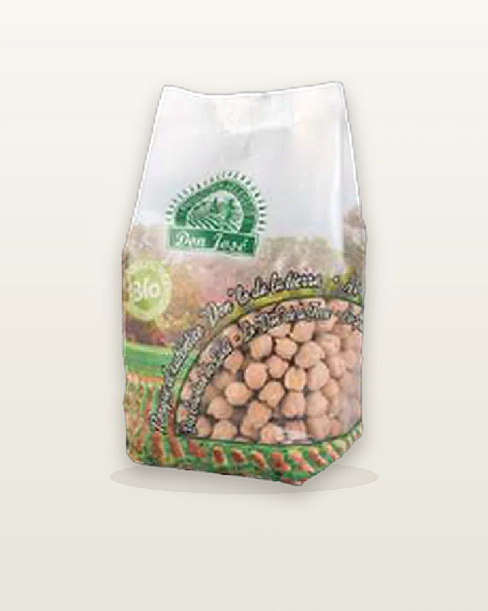

🌿 Ecológico
Garbanzo castellano ecológico
Presentación · 500 g · 5 kgGarbanzo castellano de agricultura ecológica certificada. La legumbre más universal — hummus, falafel, cocidos y guisos — con el compromiso de una producción respetuosa con el suelo y el medio ambiente.
Producción ecológica
Muy versátil
Proteína vegetal
Sin conservantes
Aplicaciones
¿Para qué se usa?
Hummus
Falafel
Cocidos
Ensaladas
Guisos
Cremas
Producto
Características & Beneficios
Datos del producto
LíneaDon José Ecológico
FamiliaGarbanzos
VariedadCastellano
CertificaciónProducción ecológica UE
Presentación500 g · 5 kg
Por qué elegirlo
Agricultura ecológica
Apuesta por métodos que cuidan la biodiversidad y el suelo.
Legumbre universal
Del hummus al cocido: una base para cientos de recetas.
Nutrición completa
Proteína y fibra en cada ración.
Sin conservantes
Selección Don José, sin aditivos artificiales.
Para distribuidores
Ficha técnica
| Peso neto | 500 g · 5 kg |
| Variedad | Garbanzo castellano ecológico |
| Remojo / cocción | Consultar ficha definitiva |
| Categoría | Ecológico |
| Formato de venta | Según presentación (500 g y 5 kg) |
| Conservación | Lugar fresco y seco, alejado de la luz directa |
| Sin | Conservantes · Colorantes · Gluten |
Inspiración
Recetas


¿Interesado en distribuir este producto?
Contacta con nuestro equipo para solicitar información sobre precios, formatos y condiciones de distribución.